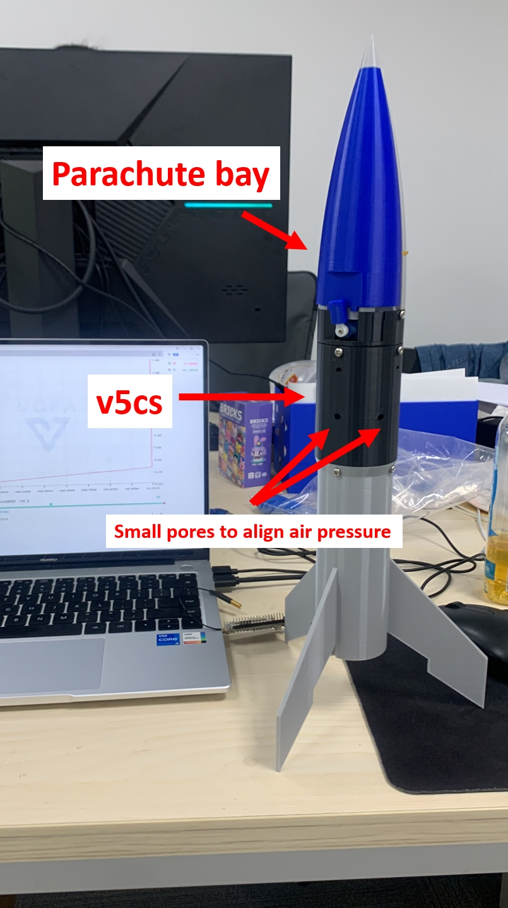

v5cs (stands for “version 5 control system”) is a newly designed control system for the model rocket. It is capable of calculating the orientation and height of the rocket amidst flight, and transmitting the data back to the ground station. When the rocket is detected to be tilting by over 60 degrees from vertical position, the servo will turn and release the parachute, which is retained in the nosecone by the servo arm, and can be deployed via a small piece of rubber band.
The servo is positioned at the upmost part of the entire system, and directly controls the release of parachute.
The cavity besides the servo is made to accomodate the 3.7v lithium battery.
A special opening is made at the lowest part of the entire sysem, which allows data transmittion & (wired) debugging without needing to disassembly the bay.
The control system uses the lora 32 board as its main board. It is an upgraded version of the Espressif esp 32 board by Heltec Automation, incoorporating the powerful wireless data transmission tool LORA.
The bmp180 barometric sensor gives precise measurement of the air pressure.
The mpu6050 gyroscope sensor gives precise measurement of the rocket’s current position.
Programming
Libraries used (in VS code):
- Adafruit BMP085 Library
- Adafruit BusIO
- Adafruit GFX Library
- Adafruit MPU6050
- Adafruit SSD130
- Adafruit Unified Sensor
- ESP32Servo
- MPU6050_tock
- RadioLib
Code:
Click here to view code
2
3
4
5
6
7
8
9
10
11
12
13
14
15
16
17
18
19
20
21
22
23
24
25
26
27
28
29
30
31
32
33
34
35
36
37
38
39
40
41
42
43
44
45
46
47
48
49
50
51
52
53
54
55
56
57
58
59
60
61
62
63
64
65
66
67
68
69
70
71
72
73
74
75
76
77
78
79
80
81
82
83
84
85
86
87
88
89
90
91
92
93
94
95
96
97
98
99
100
101
102
103
104
105
106
107
108
109
110
111
112
113
114
115
116
117
118
119
120
121
122
123
124
125
126
127
128
129
130
131
132
133
134
135
136
137
138
139
140
141
142
143
144
145
146
147
148
149
150
151
152
153
154
155
156
157
158
159
160
161
162
163
164
165
166
167
168
169
170
171
172
173
174
175
176
177
178
179
180
181
182
183
184
185
186
187
188
189
190
191
192
193
194
195
196
197
198
199
200
201
202
203
204
205
206
207
208
209
210
211
212
213
214
215
216
217
218
219
220
221
222
223
224
225
226
227
228
229
230
231
232
233
234
235
236
237
238
239
240
241
242
243
244
245
Adafruit_MPU6050 mpu;
Adafruit_BMP085 bmp;
SX1262 radio = new Module(8, 14, 12, 13);
Servo myservo;
int servoPin = 21;
int pos = 90; // 定義舵機轉動位置
int transmissionState = RADIOLIB_ERR_NONE;
// flag to indicate that a packet was sent
volatile bool transmittedFlag = false;
// this function is called when a complete packet
// is transmitted by the module
// IMPORTANT: this function MUST be 'void' type
// and MUST NOT have any arguments!
ICACHE_RAM_ATTR
void setFlag(void) {
// we sent a packet, set the flag
transmittedFlag = true;
}
// counter to keep track of transmitted packets
int count = 0;
void setup()
{
delay(5000);
int state = radio.begin(433);
if (state == RADIOLIB_ERR_NONE) {
Serial.println(F("Lora initialize success!"));
} else {
Serial.print(F("failed, code "));
Serial.println(state);
while (true);
}
radio.setPacketSentAction(setFlag);
myservo.attach(servoPin, 500, 2500); // 設置舵機控制腳位，並設置最小與最大脈寬
while (!mpu.begin(0x68))
{
continue;
}
Serial.begin(115200); // 設置序列埠鮑率
int init_angle = myservo.read(); // 讀取舵機初始角度
if (init_angle != pos)
{
myservo.write(pos);
delay(2000);
}
Serial.println("Servo initialize success!");
while (!bmp.begin(0x76)) {
Serial.println("Could not find a valid BMP085/BMP180 sensor, check wiring!");
delay(1000);
}
Serial.println("bmp initialize success!");
while (!mpu.begin(0x68)) {
Serial.println("Could not find a valid BMP085/BMP180 sensor, check wiring!");
delay(1000);
}
mpu.setAccelerometerRange(MPU6050_RANGE_8_G);
Serial.print("Accelerometer range set to: ");
switch (mpu.getAccelerometerRange()) {
case MPU6050_RANGE_2_G:
Serial.println("+-2G");
break;
case MPU6050_RANGE_4_G:
Serial.println("+-4G");
break;
case MPU6050_RANGE_8_G:
Serial.println("+-8G");
break;
case MPU6050_RANGE_16_G:
Serial.println("+-16G");
break;
}
mpu.setGyroRange(MPU6050_RANGE_500_DEG);
Serial.print("Gyro range set to: ");
switch (mpu.getGyroRange()) {
case MPU6050_RANGE_250_DEG:
Serial.println("+- 250 deg/s");
break;
case MPU6050_RANGE_500_DEG:
Serial.println("+- 500 deg/s");
break;
case MPU6050_RANGE_1000_DEG:
Serial.println("+- 1000 deg/s");
break;
case MPU6050_RANGE_2000_DEG:
Serial.println("+- 2000 deg/s");
break;
}
mpu.setFilterBandwidth(MPU6050_BAND_5_HZ);
Serial.print("Filter bandwidth set to: ");
switch (mpu.getFilterBandwidth()) {
case MPU6050_BAND_260_HZ:
Serial.println("260 Hz");
break;
case MPU6050_BAND_184_HZ:
Serial.println("184 Hz");
break;
case MPU6050_BAND_94_HZ:
Serial.println("94 Hz");
break;
case MPU6050_BAND_44_HZ:
Serial.println("44 Hz");
break;
case MPU6050_BAND_21_HZ:
Serial.println("21 Hz");
break;
case MPU6050_BAND_10_HZ:
Serial.println("10 Hz");
break;
case MPU6050_BAND_5_HZ:
Serial.println("5 Hz");
break;
}
Serial.println("mpu initialize success!");
transmissionState = radio.startTransmit("0");
Serial.println("modules initialized");
}
float q0 = 1, q1 = 0, q2 = 0, q3 = 0; // 四元数的元素，代表估计方向
float exInt = 0, eyInt = 0, ezInt = 0; // 按比例缩小积分误差
float Yaw,Pitch,Roll; //偏航角，俯仰角，翻滚角
void IMUupdate(float gx, float gy, float gz, float ax, float ay, float az)
{
float norm;
float vx, vy, vz;
float ex, ey, ez;
// 测量正常化
norm = sqrt(ax*ax + ay*ay + az*az);
ax = ax / norm; //单位化
ay = ay / norm;
az = az / norm;
// 估计方向的重力
vx = 2*(q1*q3 - q0*q2);
vy = 2*(q0*q1 + q2*q3);
vz = q0*q0 - q1*q1 - q2*q2 + q3*q3;
// 错误的领域和方向传感器测量参考方向之间的交叉乘积的总和
ex = (ay*vz - az*vy);
ey = (az*vx - ax*vz);
ez = (ax*vy - ay*vx);
// 积分误差比例积分增益
exInt = exInt + ex*Ki;
eyInt = eyInt + ey*Ki;
ezInt = ezInt + ez*Ki;
// 调整后的陀螺仪测量
gx = gx + Kp*ex + exInt;
gy = gy + Kp*ey + eyInt;
gz = gz + Kp*ez + ezInt;
// 整合四元数率和正常化
q0 = q0 + (-q1*gx - q2*gy - q3*gz)*halfT;
q1 = q1 + (q0*gx + q2*gz - q3*gy)*halfT;
q2 = q2 + (q0*gy - q1*gz + q3*gx)*halfT;
q3 = q3 + (q0*gz + q1*gy - q2*gx)*halfT;
// 正常化四元
norm = sqrt(q0*q0 + q1*q1 + q2*q2 + q3*q3);
q0 = q0 / norm;
q1 = q1 / norm;
q2 = q2 / norm;
q3 = q3 / norm;
Pitch = asin(-2 * q1 * q3 + 2 * q0* q2)* 57.3; // pitch ,转换为度数
Roll = atan2(2 * q2 * q3 + 2 * q0 * q1, -2 * q1 * q1 - 2 * q2* q2 + 1)* 57.3; // rollv
//Yaw = atan2(2*(q1*q2 + q0*q3),q0*q0+q1*q1-q2*q2-q3*q3) * 57.3; //此处没有价值，注掉
}
float compound_angle = 0; //复合角度
unsigned long timer = 0;
void loop()
{
sensors_event_t a, g, temp;
mpu.getEvent(&a, &g, &temp);
IMUupdate(g.gyro.x, g.gyro.y, g.gyro.z, a.acceleration.x, a.acceleration.y, a.acceleration.z);
compound_angle = sqrt( pow(Pitch,2) + pow(Roll,2) );
if(compound_angle >= 60 )
{
myservo.write(0);
Serial.println("111");
}
if(compound_angle <= 60)
{
myservo.write(pos);
}
if(millis() - timer >= 250)
{
if(transmittedFlag)
{
transmittedFlag = false;
radio.finishTransmit();
String l = String(bmp.readAltitude(102000) , 5);
transmissionState = radio.startTransmit(l);
}
Serial.println("Data sent! ");
Serial.print("Altitude= ");
Serial.print(bmp.readAltitude(102000));
Serial.println(" meters");
Serial.print("Compound angle= ");
Serial.print(compound_angle);
Serial.println(" degrees");
Serial.println();
timer = millis();
}
}